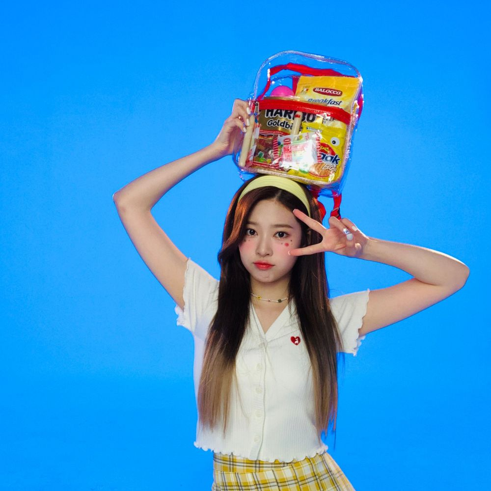

昨日 k-con すごく楽しかったよ！
メッセージも感動した！！
最近全然会えなかったけど昨日会うことができてうれしかった
遅い時間まで待ってくれてありがとう❣️
日本語の勉強頑張ってしてたのにいつも緊張しちゃってうまくはなせない。。
😭😭悲しい。。昨日も一言もしっかり言えなかった
私まだまだですㅜごめんね
이호！いつも元気をくれてありがとう！
私もいつも応援しているから自分自身を信じて頑張ってください！fighting 💪❣️
😆
It's my first time writing in English, so I'm a little nervous. How are you doing? I've been waiting for KCON since I haven't been able to see you often! I couldn't see it myself, but I was so moved by each message. I'm a little far away, but my heart is always with you! Let's cheer up a little bit more.Thank you for always watching!!! Everyone cheer up!
이호 is my life🤭😘